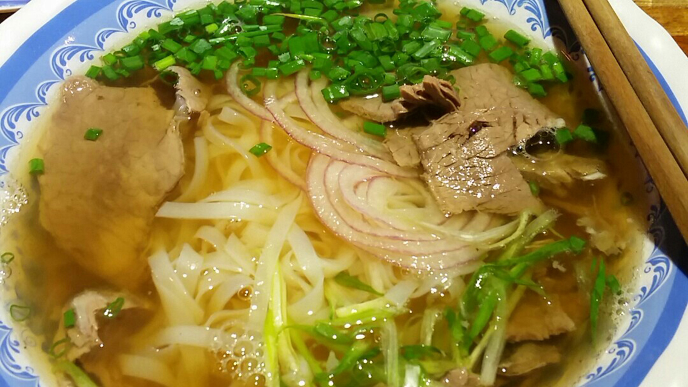
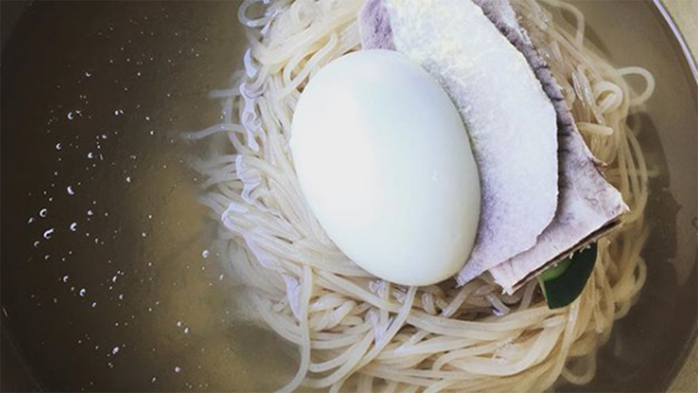
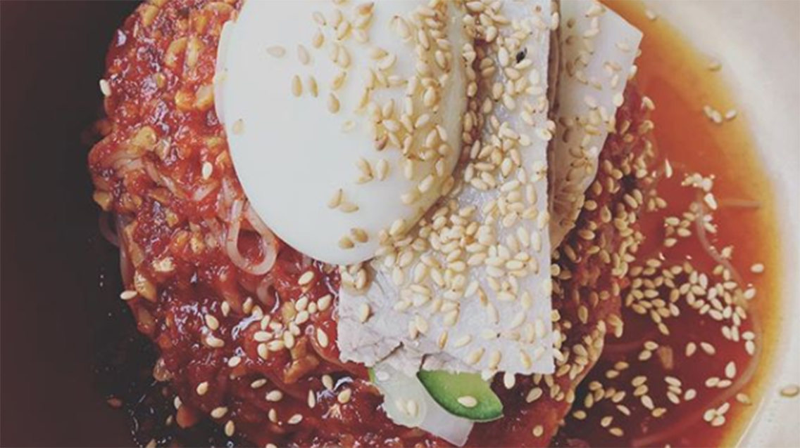
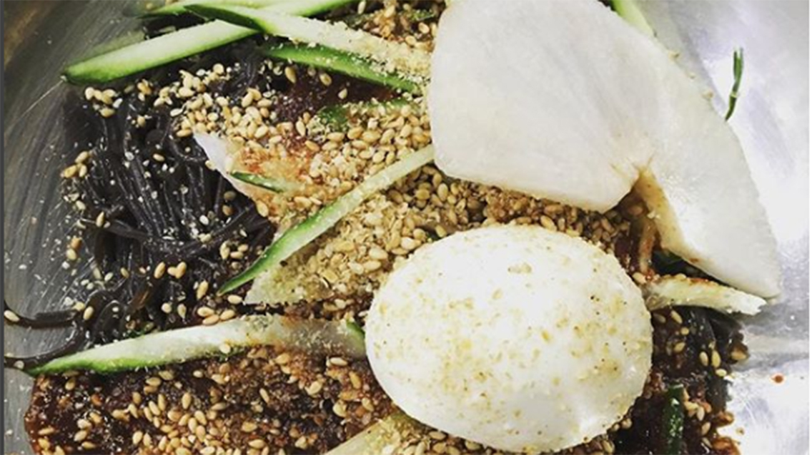

Pho (베트남 쌀국수) at Quan Bui (꽌부이)
서울시 성북구 안암동5가 15-37
15-37 Anam-dong, Seongbuk-gu, Seoul, South Korea

Photo Attribution: received permission to use photos from original photographer Amy Fu | Cropped and resized from original
Black Bean Noodles (짜장면) at Sayuri Udon House (수유리 우동집)
서울 성북구 동선동 20 동길 3 동 소문로 3
3 Dongsomun-ro 20na-gil, Dongseon-dong, Seongbuk-gu, Seoul, South Korea
Photo Attribution: received permission to use photos from original photographer Amy Fu | Cropped and resized from original
Cold Noodles (물냉면) at Man Po Myun Ok (만포면옥은평점)
서울시 은평구 갈현동 463-1
463-1 Galhyeon-dong, Eunpyeong-gu, Seoul, South Korea

Photo Attribution: received permission to use photos from original photographer @erist on
Instagram | Cropped and resized from original
Mixed Cold Noodles (비빔냉면) at Man Po Myun Ok (만포면옥은평점)
서울시 은평구 갈현동 463-1
463-1 Galhyeon-dong, Eunpyeong-gu, Seoul, South Korea

Photo Attribution: received permission to use photos from original photographer @erist on
Instagram | Cropped and resized from original
Mixed Noodles (비빔냉면) at Yulchon (율촌)
서울시 서대문구 대현동 56-3
56-3 Daehyeon-dong, Seodaemun-gu, Seoul, South Korea

Photo Attribution: received permission to use photos from original photographer @erist on
Instagram | Cropped and resized from original
 Photo Attribution: received permission to use photos from original photographer Amy Fu | Cropped and resized from original
Photo Attribution: received permission to use photos from original photographer Amy Fu | Cropped and resized from original